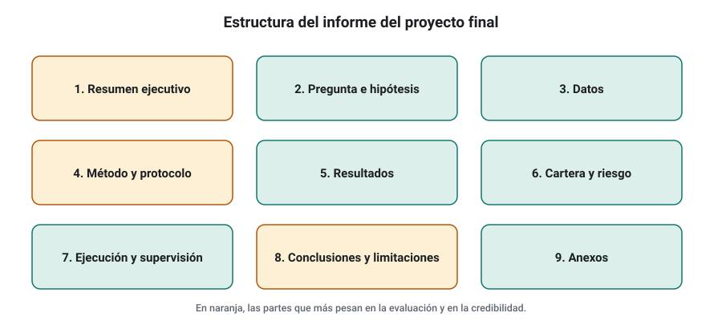
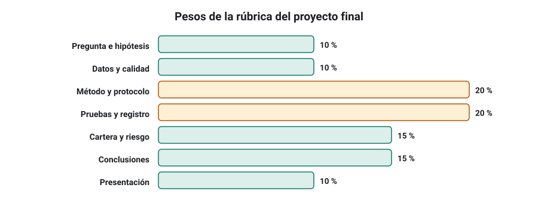

SEMANA 20 · ETAPA 5 · PROFESIONALIZACIÓN
Proyecto final
Presentación de la semana
Última semana. Vas a reunir todo lo aprendido en un proyecto final: una investigación cuantitativa completa sobre el mercado que elegiste en la semana 17, que termina en una cartera candidata (o en la conclusión justificada de que no la hay), con su plan de riesgo, de ejecución y de supervisión. No se evalúa si encuentras una estrategia rentable, sino si investigas como un profesional: con hipótesis claras, datos revisados, un protocolo fijado de antemano, decisiones coherentes y conclusiones honestas.
Objetivos
Al terminar la semana sabrás:
- Presentar una investigación cuantitativa de forma clara, completa y verificable.
- Defender por escrito tus decisiones y sus limitaciones.
- Entregar un expediente que otra persona pueda revisar y reproducir.
Plan de la semana (25–30 horas)
| Bloque | Horas | Qué harás |
|---|---|---|
| Clases | 2 | Dos lecciones |
| Proyecto | 20–24 | Completar, redactar y revisar el proyecto final |
| Examen final | 2 | Examen de todo el curso |
| Defensa escrita | 2 | Respuestas a las preguntas del tribunal |
Qué necesitas
- La propuesta de proyecto de la semana 17 y la investigación I-17.
- Todo tu expediente: cuaderno, registro de pruebas, protocolos, fichas y hojas de cálculo.
Criterio para obtener el certificado del curso
Tener en estado APROBADO, con un 80 % o más cada uno:
- ☐ Todas las semanas anteriores
- ☐ Proyecto final
- ☐ Examen final
- ☐ Defensa escrita
Cómo presentar una investigación cuantitativa
Formato: clase de 45 minutos · Lectura: 40 minutos
La estructura
Una investigación cuantitativa profesional sigue una estructura reconocible. Úsala en tu proyecto:

- Resumen ejecutivo (una página): pregunta, método, resultado principal, decisión y riesgos. Quien solo lea esto debe entender lo esencial.
- Pregunta e hipótesis: qué querías saber y por qué podría ser cierto (explicación económica).
- Datos: fuentes, licencias, periodo, zona horaria, informe de calidad y limitaciones.
- Método: configuración de la generación, protocolo de validación con sus criterios fechados antes de evaluar, registro de pruebas.
- Resultados: todas las pruebas, también las que fallaron. Tablas y gráficos claros.
- Cartera y riesgo: composición, correlaciones, perfil, límites, Monte Carlo.
- Ejecución y supervisión: verificación en MetaTrader, registro de ejecución, criterios de desactivación.
- Conclusiones y limitaciones: qué sabes, qué no y qué harías después.
- Anexos: fichas, hojas de cálculo, archivos de SQX y EA.
Reglas de presentación
- Cada cifra con su fuente: de qué prueba, con qué datos y qué periodo.
- Gráficos que se entiendan solos: título, ejes con unidades, leyenda y una frase de conclusión.
- Separar hechos de opiniones: «el PF OOS fue 1,21» es un hecho; «creo que seguirá funcionando» es una opinión, y debe decirse así.
- Lenguaje prudente: «superó el protocolo» y no «es rentable»; «resultado del backtest» y no «rentabilidad».
- Reproducibilidad: otra persona con tus archivos debería obtener los mismos resultados.
Errores que restan credibilidad
- Mostrar solo la mejor estrategia y ocultar cuántas probaste.
- Cifras de rentabilidad anualizada sin drawdown ni periodo.
- Gráficos sin ejes ni unidades.
- Conclusiones más fuertes que los datos.
- Cambiar criterios a mitad de la investigación sin declararlo.
Comprueba que lo has entendido
- ¿Qué debe contener el resumen ejecutivo?
- Escribe la versión prudente de «mi estrategia gana un 25 % al año».
- ¿Por qué se señalan los puntos débiles uno mismo?
Entrega y defensa escrita del proyecto final
Formato: clase de 30 minutos · Proyecto: 20–24 horas
El calendario de la semana
| Día | Tarea |
|---|---|
| 1 | Revisar el expediente y completar las pruebas pendientes |
| 2–3 | Redactar los apartados 2 a 7 |
| 4 | Redactar el resumen ejecutivo, las conclusiones y las limitaciones |
| 5 | Revisión completa con la lista de comprobación y entrega |
| 6 | Examen final |
| 7 | Defensa escrita |
Lista de comprobación antes de entregar
- ☐ El resumen ejecutivo cabe en una página y responde a pregunta, método, resultado, decisión y riesgos.
- ☐ La hipótesis y el protocolo tienen fecha anterior a los resultados.
- ☐ El registro de pruebas indica cuántas estrategias y variantes se probaron.
- ☐ Todas las pruebas del protocolo aparecen, también las fallidas.
- ☐ Cada gráfico tiene título, ejes, unidades y conclusión.
- ☐ La cartera tiene plan de riesgo, límites y criterios de desactivación.
- ☐ La verificación en MetaTrader está documentada.
- ☐ Las limitaciones están escritas con honestidad.
- ☐ Los anexos permiten reproducir los resultados.
- ☐ No hay recomendaciones de inversión ni promesas de resultados.
La defensa escrita
Tras la entrega recibirás entre cinco y ocho preguntas del tribunal sobre tu proyecto. Ejemplos del tipo de pregunta:
- «¿Qué pasaría con tu cartera si los costes reales fueran el doble?»
- «¿Por qué fijaste ese umbral de PF OOS y no otro?»
- «¿Qué prueba de tu protocolo crees que es más débil y por qué?»
- «Si tuvieras que eliminar una estrategia de la cartera, ¿cuál sería?»
Tendrás 48 horas para responder por escrito, con un máximo de 300 palabras por pregunta. Se valora que las respuestas se apoyen en tus datos y en los conceptos del curso.
La rúbrica del proyecto
| Bloque | Peso |
|---|---|
| Pregunta, hipótesis y fuentes | 10 % |
| Datos e informe de calidad | 10 % |
| Método y protocolo fijado de antemano | 20 % |
| Ejecución de las pruebas y registro | 20 % |
| Cartera, riesgo y supervisión | 15 % |
| Conclusiones y limitaciones | 15 % |
| Presentación y reproducibilidad | 10 % |

Comprueba que lo has entendido
- ¿Qué bloque de la rúbrica pesa más?
- ¿Qué tipo de preguntas tendrá la defensa?
- ¿Qué elemento de la lista de comprobación te parece más difícil de cumplir?
Glosario de la semana
| Término | Inglés | Definición |
|---|---|---|
| Anexo | Appendix | Material de apoyo que permite verificar el informe |
| Defensa escrita | Written defense | Respuestas por escrito a las preguntas de un tribunal sobre el proyecto |
| Limitaciones | Limitations | Puntos débiles conocidos de una investigación |
| Reproducibilidad | Reproducibility | Posibilidad de obtener los mismos resultados con los mismos datos y métodos |
| Resumen ejecutivo | Executive summary | Síntesis de una página con lo esencial del informe |
| Rúbrica | Rubric | Tabla de criterios y pesos de evaluación |
Ejercicios obligatorios
E1 · Resumen. Escribe el resumen ejecutivo de tu proyecto en una página.
E2 · Lenguaje prudente. Reescribe con lenguaje prudente cinco frases de tus entregas anteriores que fueran demasiado afirmativas.
E3 · Gráficos. Revisa los gráficos de tu proyecto con las reglas de la lección 1 y corrige los que no las cumplan.
E4 · Limitaciones. Escribe las cinco principales limitaciones de tu investigación, ordenadas por importancia.
E5 · Preguntas del tribunal. Escribe las cinco preguntas más difíciles que crees que te hará el tribunal y respóndelas.
Investigación I-20 y entrega práctica
Investigación I-20 · Proyecto final
El proyecto final es la investigación de esta semana. Sigue los ocho pasos completos, el protocolo de validación y la estructura de la lección 1.
Entrega práctica · Proyecto final
Qué entregar
| Archivo | Contenido |
|---|---|
CODIGO_S20_INFORME |
Informe completo con la estructura de la lección 1 |
CODIGO_S20_ANEXOS |
Carpeta con fichas, hojas de cálculo, registro de pruebas, protocolos fechados, archivos de SQX y EA |
CODIGO_S20_DEFENSA |
Respuestas a las preguntas del tribunal (tras recibirlas) |
Cómo se evaluará
Con la rúbrica de la lección 2. Se aprueba con un 80 %. Si faltan el protocolo fechado o el registro de pruebas, el proyecto queda como NO EVALUABLE.
Examen final del curso · Variante A
Tiempo orientativo: 90 minutos · Puntuación: 100 puntos · Aprobado: 80 puntos · Puedes usar calculadora, pero no el material del curso ni el tutor de IA. Si suspendes, repetirás con otra variante.
Parte A · Opción múltiple (30 puntos, 2 por pregunta)
Parte B · Cálculo (45 puntos, 15 por ejercicio)
B1. Cuenta de 8.000 €, riesgo del 0,5 %, stop de 35 pips en EUR/USD con el EUR/USD a 1,0800. a) Calcula el lote. b) Si el drawdown del percentil 95 de tu cartera es del 14 % con un riesgo del 1 % por operación y tu tolerancia es del 8 %, ¿qué riesgo por operación usarías? c) Con 10 pérdidas seguidas a ese riesgo, ¿cuánto caería la cuenta?
B2. Una estrategia tiene en IS un PF de 1,65 y en OOS de 1,12; con los costes al 200 %, un PF de 0,98; y supera al 91 % de sus versiones con entradas aleatorias. Tus criterios son: PF OOS ≥ 1,15; PF con costes al 200 % ≥ 1,05; superar al 95 % de las aleatorias. a) ¿Qué criterios cumple? b) ¿Cuál es tu decisión: aceptar, rechazar o repetir? c) Justifícala.
B3. Tres estrategias de una cartera tienen, con pesos iguales, un Sharpe conjunto de 1,4. Quitando A: 1,25; quitando B: 1,47; quitando C: 1,31. a) Ordena su aportación. b) ¿Qué harías con B? c) ¿Por qué no optimizarías los pesos para maximizar el Sharpe histórico?
Parte C · Razonamiento (25 puntos)
En un máximo de 300 palabras: explica, como si se lo contaras a alguien que empieza, por qué la mayoría de las estrategias generadas automáticamente fracasan en real y cuál es el método que has aprendido en este curso para aumentar las probabilidades de éxito, sin prometer resultados.